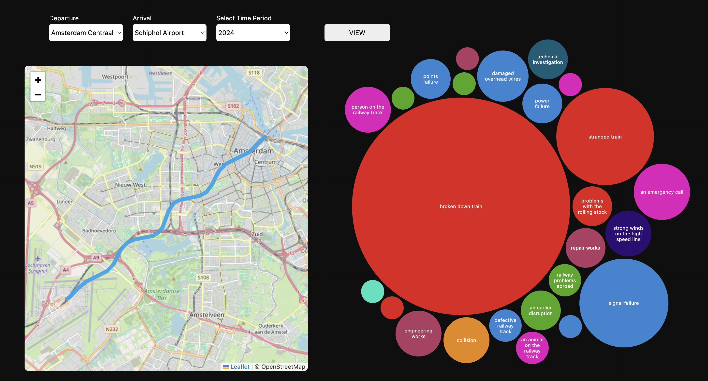
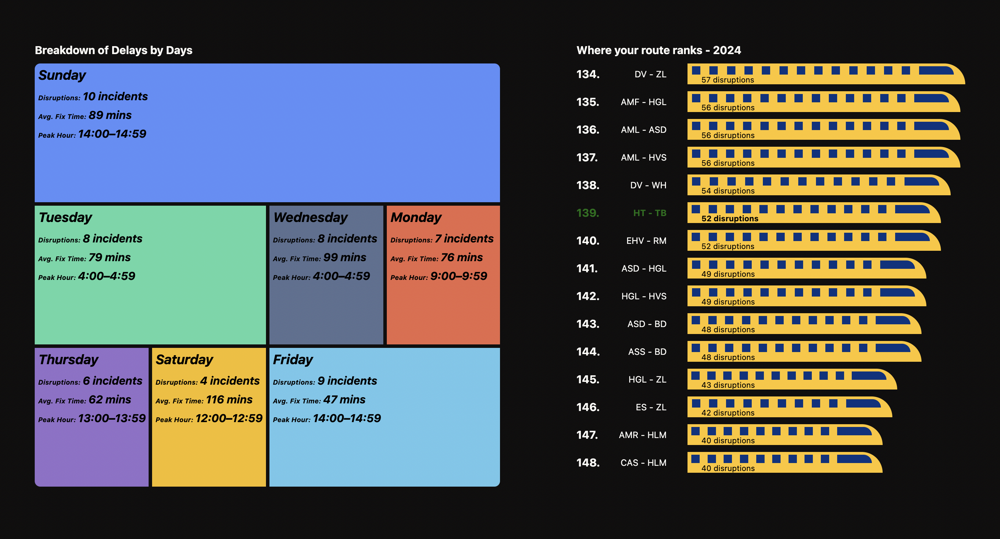
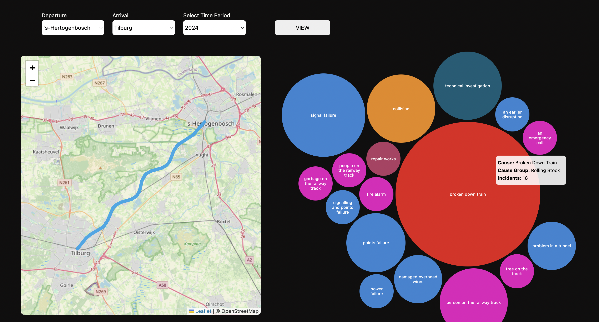

Project Gallery




In the Netherlands, frequent train disruptions affect daily commuting, causing professionals to miss work and students to miss school. For experts and newcomers moving to the country, understanding these disruptions is essential for making informed decisions about where to live and how to plan their journeys. This project aims to visualize train disruption data, providing insight into the causes, routes, and affected train lines. By making this information accessible, the solution will help experts and other citizens choose rental locations that minimize the impact of recurring train disruptions.
This project visualizes train disruption data in the Netherlands to help commuters, newcomers, and experts understand the causes, affected routes, and train lines. E.g 's-Hertogenbosch to Tilburg
The Goal was to design an interactive visualization tool that enables expats and students in the Netherlands to better understand train disruptions and, helping them make informed decisions.
An interactive platform that visualizes train disruption data, including causes, locations, affected routes, and estimated resolution times
Tip: Check on google most common train disruption route in netherland. And see the cause, incident,duration, fixed time and rank on the platform.